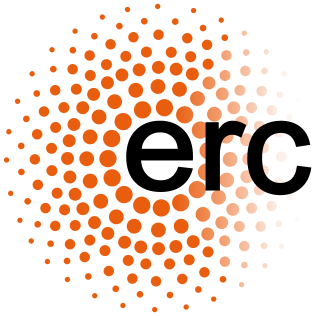
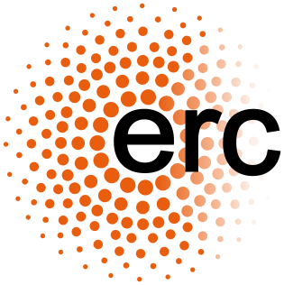
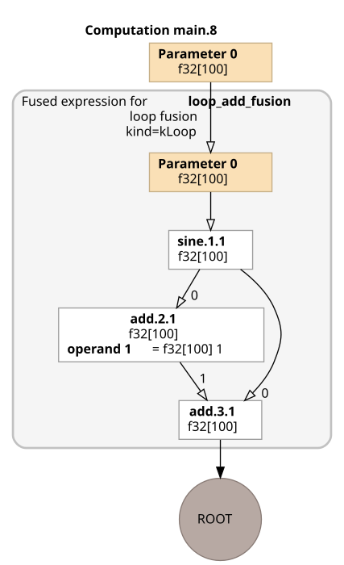
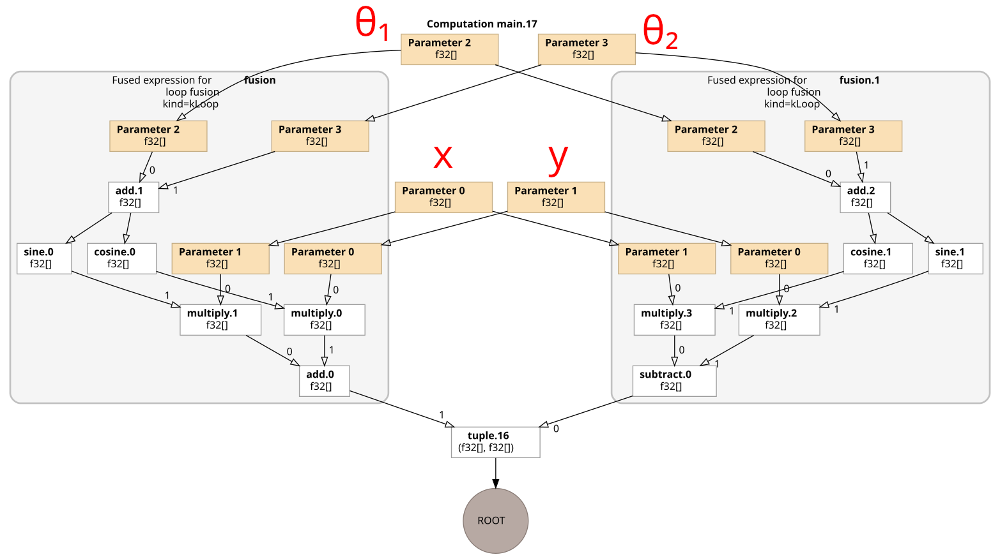
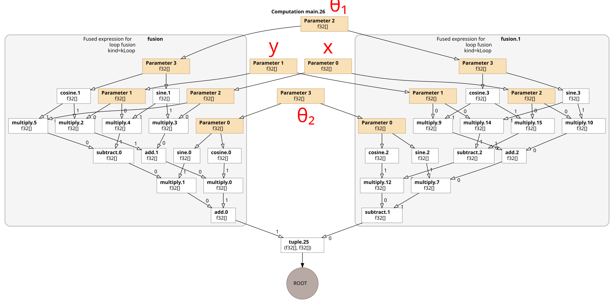

FURAX: a modular JAX toolbox for solving inverse problems in science
Pierre Chanial, Artem Basyrov, Simon Biquard, Wassim Kabalan,
Wuhyun Sohn and the SciPol Team


 
 
FURAX Library
- Motivations and Goals: Why and for what FURAX ?
- FURAX Bulding Blocks: Presentation of the FURAX PyTrees and Operators.
- Optimizations: High-level algebraic reductions with FURAX.
- CMB Applications: From map-making to component separation (see other talks).
Motivations and Goals
- Inverse problems
- Open source: https://github.com/CMBSciPol/furax
- Modularity, extensibility, simplicity: Easy to experiment new ideas, Fail fast approach
- JAX: Differentiation, Just In Time (JIT) compilation, run the same code anywhere — on CPUs and GPUs, laptops and super-computers
- Framework for robust B-mode analysis
- Able to handle SO- and S4-like data sets volumes, Compatibility with TOAST
- Non-ideal optical components
- 1st steps: “max-L” and “template” map-making (following MAPPRAISER’s formalism)
- Multi-GPU parallelization (soon)
You can try it: pip install furax, bearing in mind that the library is actively developed.
FURAX Building Blocks
FURAX PyTrees
FURAX relies on PyTrees to represent the data. For example, for component separation analysis, we can write the generalized sky as a nested PyTree
HealpixLandscape(NSIDE, 'IQU') returns an instance of StokesIQUPyTree, which has the attributes i, q and u that store the JAX arrays of the Stokes components.
Also available are StokesIPyTree, StokesQUPyTree and StokesIQUVPyTree.
PyTree are then used by the FURAX Operators:
FURAX Operators
The base class AbstractLinearOperator provides a default implementation for the usual linear algebra operations.
| Operation | FURAX | Comment |
|---|---|---|
| Addition | A + B |
|
| Composition | A @ B |
|
| Multiplication by scalar | k * A |
Returns the composition of a HomothetyOperator and A |
| Transpose | A.T |
Through JAX autodiff, but can be overriden |
| Inverse | A.I or A.I(solver=..., maxiter=..., preconditioner=...) |
By default, the CG solver is used, but it can be overriden |
| Block Assembly | BlockColumnOperator([A, B]) BlockDiagonalOperator([A, B]) BlockRowOperator([A, B]) |
Handle any PyTree of Operators: Block*Operator({'a': A, 'b': B}) |
| Flattened dense matrix | A.as_matrix() |
|
| Algebraic reduction | A.reduce() |
FURAX Operators
| Generic Operator | Description |
|---|---|
IdentityOperator |
|
HomothetyOperator |
|
DiagonalOperator |
|
BroadcastDiagonalOperator |
Non-square operator for broadcasting |
TensorOperator |
For dense matrix operations |
TreeOperator |
For generalized matrix operations |
SumOperator |
Sum along axes |
IndexOperator |
Can be used for projecting skies onto time-ordered series |
MaskOperator |
Bit-encoded 0- or 1-valued mask |
MoveAxisOperator |
|
ReshapeOperator |
|
RavelOperator |
|
SymmetricBandToeplitzOperator |
Methods: direct, FFT, overlap and save |
Block*Operator |
Block assembly operators (column, diagonal, row) |
| Applied Operator | Description |
|---|---|
QURotationOperator |
|
HWPOperator |
Ideal HWP |
LinearPolarizerOperator |
Ideal linear polarizer |
CMBOperator |
Parametrized CMB SED |
DustOperator |
Parametrized dust SED |
SynchrotronOperator |
Parametrized synchrotron SED |
PointingOperator |
On-the-fly projection matrix |
MapSpaceBeamOperator |
Sparse Beam operator |
TemplateOperator |
For template map-making |
FURAX other components (see next talks)
- Preconditioners
- Several map-makers
- TOAST interface
- SOTODLib interface
- Spectral likelihood estimators
- WCS: Healpix & Plate carrée
- Ability to pad observations (JAX constraint)
Multi-level Optimizations
JAX GPU Compilation Chain
From the Python code to the GPU-native code
XLA simplifications
Mathematical identities
- \(a\times 0 = a - a = 0\)
- \(a - 0 = a\times 1 = a / 1 = a^1 = a\)
- \(a^{-1} = 1/a\), \(a^{1/2} = \sqrt{a}\)
- \(-(-x) = x\)
- \((-a)(-b) = ab\)
- \(ac + bc = (a+b)c\)
- \(a / const = a \times (1 / const)\)
- \((a + c1) + (b + c2) = a + b + (c1 + c2)\)
- \((a / b) / (c / d) = ad / bc\)
- \(\ln e^x = x\)
- \(\exp a \exp b = \exp(a+b)\)
- \(a / \exp b = a \exp(-b)\)
Array manipulations
- slicing
- reshaping
- broadcasting
- transposition
- bitcast
- copies
Ol’ Digger’s tricks
- \(a^2 = a \times a\), \(a^3 = a \times a \times a\)
- \(a / b = a\)>>\(\log_2 b\) if b is a power of 2
- \(a \mod b = a \& (b - 1)\) if b is a power of 2
and many more (see xla/hlo/transforms/simplifiers/algebraic_simplifier.cc)
Dead Code Elimination (DCE)
XLA Common Subexpression Elimination (CSE)
XLA Common Subexpression Elimination (CSE)
Definition: CSE identifies and eliminates duplicate computations within a function to optimize performance.
Benefits:
- Reduces redundant computation.
- Enhances runtime efficiency and memory usage.
- Example in Code:
- Without CSE:
jnp.sin(theta)computed twice. - After CSE: Shared computation across
aandb.
- Without CSE:

JAX GPU Compilation Chain with FURAX
From the Python code to the GPU-native code
FURAX Algebraic Reductions: Composition of Rotations

FURAX Algebraic Reductions: Composition of Rotations

FURAX Algebraic Reductions: Instrument Acquisition
Given this modeling of the acquisition, using an ideal linear polarizer and an ideal half wave plate: \[ \mathbf{H} = \mathbf{C}_{\textrm{LP}} \, \mathbf{R}_{2\theta} \, \mathbf{R}_{-2\phi} \, \mathbf{C}_{\textrm{HWP}} \, \mathbf{R}_{2\phi} \, \mathbf{R}_{2\psi} \, \mathbf{P} \] with
- \(\theta\): detector polarization angle
- \(\phi\): HWP rotation angle
- \(\psi\): telescope rotation angle
FURAX reduces this expression to:
\[ \mathbf{H} = \mathbf{C}_{\textrm{LP}} \, \mathbf{R}_{-2\theta + 4\phi + 2\psi}\, \mathbf{P} \]
FURAX Algebraic Reductions: Pointing Matrix
When the time-time noise covariance matrix \(\mathbf{N}\) is diagonal and \(\mathbf{P}\) is a “one-to-one” intensity projection matrix:
\[ \mathbf{P} = \begin{bmatrix} 0 & \cdots & 0 & 1 & 0 & \cdots & 0 \\ 0 & 1 & 0 & \cdots & 0 & 0 & \cdots & 0 \\ \vdots & \vdots & \vdots & \vdots & \vdots & \vdots & \vdots \\ 1 & 0 & \cdots & 0 & 0 & \cdots & 0 \\ \vdots & \vdots & \vdots & \vdots & \vdots & \vdots & \vdots \\ 0 & 0 & \cdots & 0 & 1 & 0 & \cdots & 0 \\ \end{bmatrix}, \]
the product \(\mathbf{P}^\top \mathbf{N}^{-1} \mathbf{P}\) is diagonal and can therefore be easily inverted (for pixel-pixel covariance matrix or preconditioning).
Each term is related to the number of noise-weighted times a pixel of the map has been observed.
For IQU maps, the product is block diagonal, with 3x3 blocks that can also be easily inverted.
By adding a rule for this operation, we’ve seen an performance improvement by more than a factor of 10 in the forward application (WIP, currently only for \(\mathbf{N}\) scalar).
FURAX Algebraic Reductions: Block Assembly
| Operation | Reduction |
|---|---|
BlockDiagonalOperator([D1, D2]) @ BlockColumnOperator([C1, C2]) |
BlockColumnOperator([D1 @ C1, D2 @ C2]) |
BlockRowOperator([R1, R2]) @ BlockDiagonalOperator([D1, D2]) |
BlockRowOperator([R1 @ D1, R2 @ D2]) |
BlockRowOperator([R1, R2]) @ BlockColumnOperator([C1, C2]) |
R1 @ C1 + R2 @ C2 |
Practical use case:
Given two observations
\[ \mathbf{P} = \begin{bmatrix} \mathbf{P}_1 \\ \mathbf{P}_2 \end{bmatrix}, \quad \mathbf{N}^{-1} = \begin{bmatrix} \mathbf{N}_1^{-1} & 0 \\ 0 & \mathbf{N}_2^{-1} \end{bmatrix}, \]
The combination is reduced to \[ \mathbf{P}^\top \mathbf{N}^{-1} \mathbf{P} = \mathbf{P}_1^\top \mathbf{N}_1^{-1} \mathbf{P}_1^{\,} + \mathbf{P}_2^\top \mathbf{N}_2^{-1} \mathbf{P}_2^{\,}. \]
Next steps
- Full processing of several observation using padding
- Distribution GPU
- Other experiment (QUBIC ?)